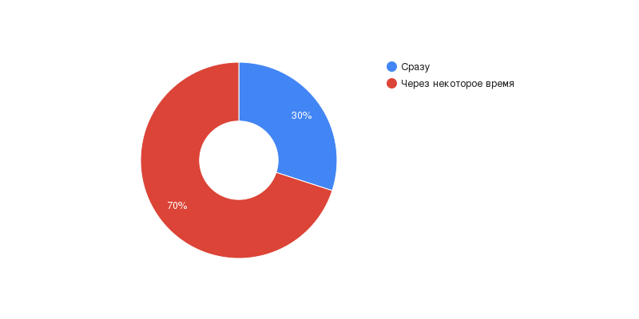

А теперь обратимся к статистике, которую мы рассчитали, опросив 54 человека
В среднем 6-8 часов в день люди проводят со смартфоном
Семейное время без смартфона
Смартфону предпочли бы
Без причины смартфон
Уведомления
На сообщения отвечают
Используют смартфон
В учебных целях
Зарядное устройство с собой
Считают, что от смартфона
Пальцем по экрану смартфона от скуки
Часто игнорируют домашние дела, чтобы больше провести время в сети

Часто скрытничают, когда у них спрашивают, чем они занимаются в сети
Часто выбирают провести время в Интернете, вместо того, чтобы выбраться куда-нибудь с друзьями

Часто говорят себе: «Еще минутку, еще немного», находясь онлайн
Многие, если опираться на результаты опроса, зависимы от смартфона, также некоторые считают, что они не зависимы, но их ответы на вопросы говорят обратное, в итоге если посчитать, то из 54, согласно их ответам, 44 человека зависимы и только 10 - нет